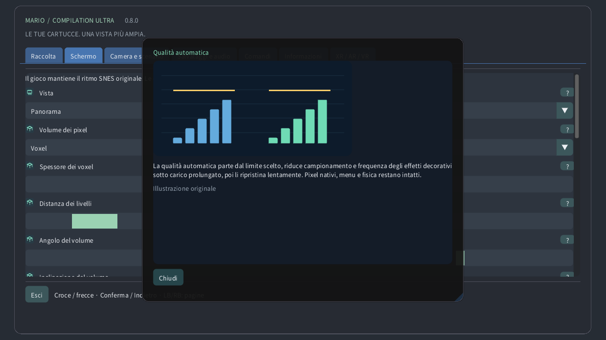

Scegli una cartuccia locale, avvia un gioco o apri la guida. I download pubblici non includono giochi né salvataggi personali.
Originale mantiene lo schermo della console e Panorama lo estende. Atlante mostra il terreno disponibile; Mappa completa legge tutta l’area caricata quando il formato è supportato, anche inesplorata. Una porta può cambiare area.
Scegli se seguire la telecamera originale, il personaggio o una posizione fissa. Cambia l’inquadratura senza muovere il personaggio né attivare nemici lontani.
Lo zoom regola quanto terreno è visibile. Sull’orologio, 0% mostra tutta l’area caricata e 100% raggiunge la telecamera originale. La velocità del gioco resta invariata.
Su un orologio rotondo, la lente piega l’intero rettangolo del gioco in un cerchio, mantenendo i bordi. Comandi e testo restano piani. Disattivala per un rettangolo senza deformazioni.
La corona o ghiera rilevata controlla lo zoom in gioco e scorre i menu. Sensibilità regola l’effetto di ogni rotazione; Inverti cambia il verso. Lo zoom tattile funziona anche senza corona.
Pixel vicini mantiene i bordi netti. Nitido conserva la chiarezza a dimensioni non intere. Morbido attenua l’ingrandimento. Immagine originale e collisioni restano invariate.
Pixel quadrati conserva la forma dei pixel originali; TV 4:3 riproduce le proporzioni di un televisore. Mondo pixel usa pixel quadrati e zoom intero.
La qualità automatica parte dal limite scelto, riduce campionamento e frequenza degli effetti decorativi sotto carico prolungato, poi li ripristina lentamente. Pixel nativi, menu e fisica restano intatti.
La riserva lascia tempo per il lavoro imprevisto. Una riserva maggiore favorisce la fluidità. Molto fluido usa il 40%; Quest almeno il 35%. La qualità risale quando c’è margine.
Lo stato termico locale di Android può ridurre i dettagli decorativi prima che il calore aumenti. Non richiede permessi né rete. Il sistema controlla comunque frequenze reali e aggiornamento.
La sincronizzazione segue lo schermo per ridurre le immagini spezzate. Il gioco conserva il proprio ritmo. Quest usa la frequenza scelta del visore; la riserva è calcolata su quella frequenza.
CRT efficiente conserva l’aspetto rétro con meno calcoli. Automatico parte leggero e consente il riferimento dopo un margine GPU misurato duraturo. Riferimento forza il calcolo più costoso.
Scegli finestra, schermo e comportamento a schermo intero. Cambia dove appare l’immagine, senza modificare il livello caricato o i salvataggi.
Lo sfondo riempie lo spazio attorno al gioco. Paesaggio morbido riprende i suoi colori; Mezzanotte e Nero sono più sobri. Sfocatura e luminosità agiscono su questo contorno.
La sfocatura ammorbidisce il paesaggio circostante e la luminosità ne regola la luce. L’immagine nativa non cambia. Sotto carico, l’automatismo può aggiornare meno spesso questa decorazione.
I bordi morbidi fondono l’estensione con lo sfondo vicino alla telecamera originale. Disattivali per un raccordo netto. Le mappe complete conservano la propria inquadratura.
L’indicatore mostra il personaggio, la guida delimita la telecamera e la minimappa ne mostra la posizione. Il primo piano mantiene leggibile lo schermo originale quando la mappa è lontana.
Le anteprime mostrano posizioni verificate o aspetti osservati localmente. Oggetti sbiaditi e contorni sono guide, non nemici attivi aggiuntivi. Opacità ed etichette ne regolano la visibilità.
Scegli angolo, dimensione, opacità e durata dei promemoria. Un tempo pari a zero li mantiene visibili. Queste indicazioni non cambiano gioco o telecamera.
Regola lingua, dimensione e contrasto dei menu per leggere comodamente. Le guide illustrate funzionano offline. Grafica e lingua della cartuccia sono indipendenti.
Scegli assegnazione dei pulsanti e zone morte. Una zona maggiore ignora più piccoli movimenti. I comandi rapidi aggiungono scorciatoie della telecamera, mantenendo le azioni normali.
I pulsanti tattili accettano più dita contemporaneamente. Automatico li mostra senza gamepad. Posizione, dimensione, opacità e mano preferita cambiano i comandi, non la fisica.
Tieni premuto il comando scelto per tornare attraverso stati recenti esatti. La durata dipende da memoria e cartuccia. Audio inverso e indicatore sono facoltativi; i salvataggi restano separati.
Uno slot conserva lo stato corrente della macchina. Caricare vi ritorna; la ripresa automatica usa uno slot proprio. Il progresso della cartuccia è separato. La sostituzione richiede conferma.
Volume e silenzio regolano la riproduzione locale. Non cambiano velocità né cancellano salvataggi. L’audio del riavvolgimento si imposta separatamente.
La pausa rilascia i comandi mantenuti. Focus e tracciamento regolano le pause automatiche. Riprendere conserva la partita; uscire salva il progresso della cartuccia.
Scegli schermo sospeso, parete, atlante a terra, tavolo arcade, stanza CRT o schermo curvo. La stessa partita continua; cambia solo la presentazione nello spazio.
Dimensione, distanza, altezza, inclinazione e spazio posizionano l’oggetto virtuale nella stanza. Usa le unità indicate. Ricentra lo riporta a portata senza riavviare il gioco.
La parete automatica usa i dati della scena autorizzati, se disponibili. Bloccare o salvare mantiene il luogo scelto. La perdita del tracciamento può mettere in pausa; il posizionamento manuale resta disponibile.
Telecomando virtuale, mani e tocco diretto usano gli stessi comandi. Dimensione e suggerimenti migliorano l’uso. La forza aptica cambia il feedback, non il momento degli input.
CRT aggiunge linee di scansione, maschera RGB, vetro curvo e riflessi. Più intensità è una scelta visiva, non nuovo dettaglio del gioco. La qualità automatica può semplificare la decorazione costosa.
Passthrough mostra la stanza reale; quando è spento, l’ambiente virtuale fornisce lo sfondo. Trasparenza, paesaggio circostante e luminosità regolano ciò che circonda il gioco.
Dettaglio del quadro e degli occhi limitano strati distinti. L’automatismo adatta entrambi. Il menu indipendente resta nitido; la foveazione periferica è facoltativa, se supportata.
Il punto interrogativo apre una spiegazione illustrata. Puntatore e focus del gamepad mostrano un’anteprima; il tocco apre la scheda. Le illustrazioni sono esempi originali, non immagini della cartuccia.
La qualità manuale disattiva l’adattamento e mantiene il dettaglio scelto. Qualità automatica ripristina l’adattamento; Molto fluido lascia più riserva di prestazioni.
Sui Quest compatibili, il carico prolungato può ridurre il dettaglio periferico mantenendo il centro. I menu hanno un livello nitido separato. I dispositivi non compatibili usano il rendering normale. La qualità nel visore fisico resta da verificare.
3D procedurale facoltativo: i pixel diventano colonne solide, con terreno, sfondi e personaggi su piani separati. Il rilievo è sottile; i voxel sono più spessi. Lo spessore cambia la profondità, l’angolo cambia la vista sullo schermo. La qualità automatica riduce i dettagli sotto carico. HUD e primi piani mantengono i pixel originali. Le scene speciali tornano allo schermo originale. È un’interpretazione, non una ricostruzione dei lati nascosti. Prestazioni fisiche non testate.